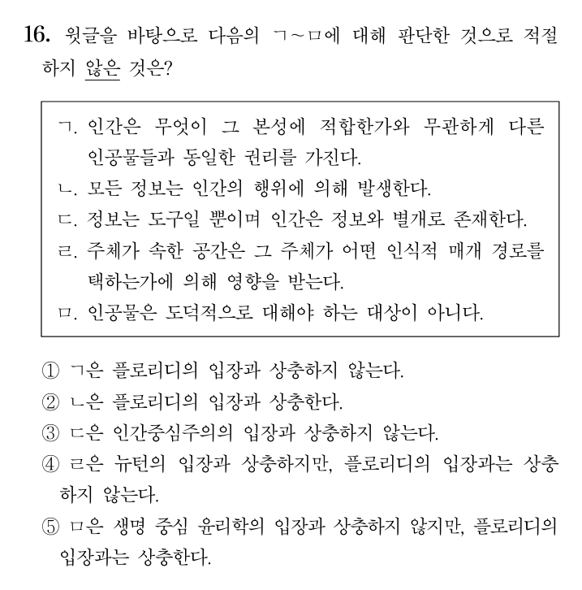
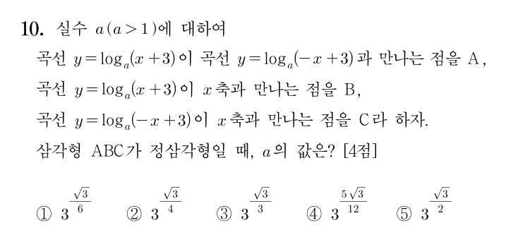
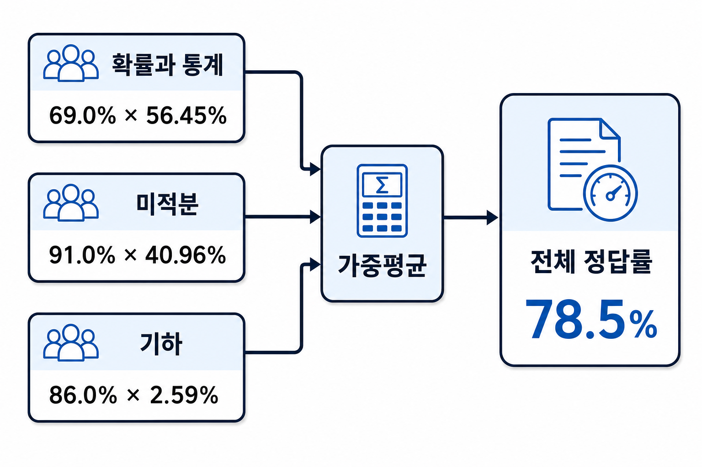
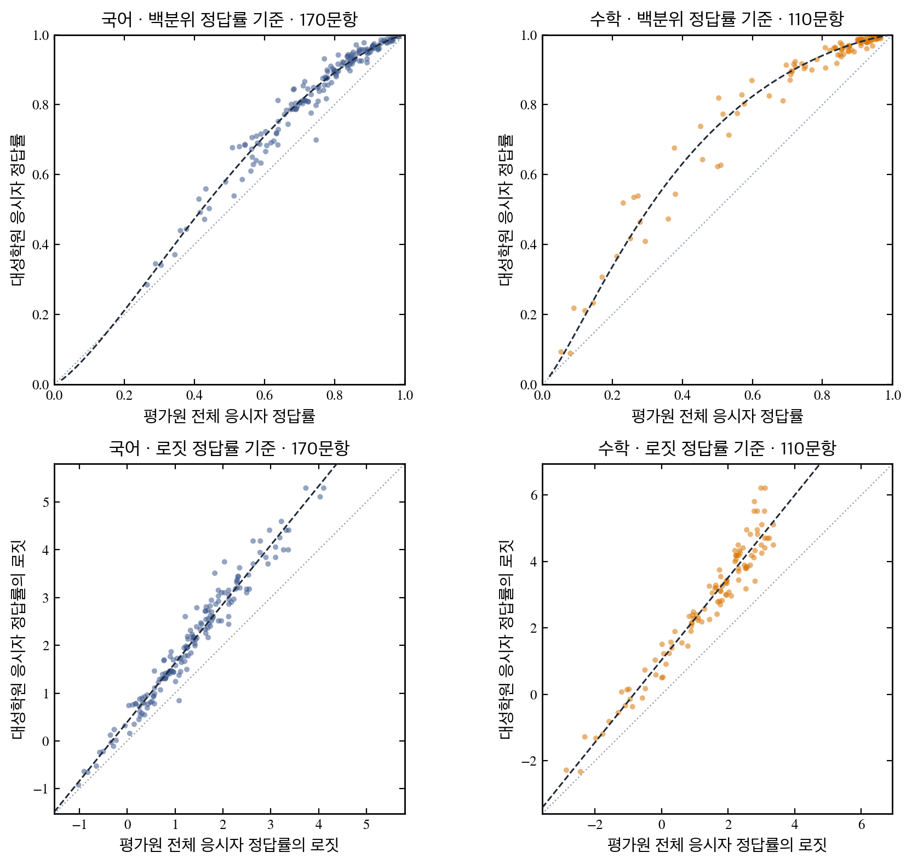

Predictor 1.0
신뢰할 수 있는 문항 난이도 추정을 위한 ML 연구
문항의 예상 난이도는 검토자마다 다를 수 있으며, 실제 시행 후 정답률이 예상과 다르게 나타나는 경우도 있습니다. Predictor는 인간의 주관적 개입을 배제하고 순수히 문항 내용만으로 정답률을 예측하기 위해 만들어진 ML 모델입니다.
이 글에는 Predictor 1.0의 연구·개발 과정과 관련 회의에서 논의된 내용이 기록되어 있습니다.
07.29 Predictor 1.0 1차 평가
국어·수학 통합 모델의 첫 완성본을 학습 종료 후 출제·시행된 강K 회차로 평가한 결과입니다. 기획 회의에서 발표한 내용을 정리한 것으로, 회의에서 받은 질문과 제안은 5절에 기록했습니다.
1. 평가 방법 및 결과
평가는 학습에 사용하지 않은 문항으로 진행했습니다. 강K 신규 회차(국어 4·5회, 수학 3·4회)는 학습 데이터 생성 후 출제되어 모델이 접하지 않은 문항입니다. 실제값은 대성학원 채점 결과이며, gpt-5.6-terra에는 웹 검색 도구 없이 같은 문항 내용을 입력했습니다.
아래 표는 강K 신규 회차의 문항별 채점 결과입니다.
| 문항 | 영역 | 실제 정답률 | 예측 정답률 | 오차 | 문항 보기 | |
|---|---|---|---|---|---|---|
| 1 | 독서 | 93.4% | 97.6% | +4.2%p | ||
| 2 | 독서 | 91.8% | 97.2% | +5.4%p | ||
| 3 | 독서 | 87.3% | 91.6% | +4.3%p | ||
| 4 | 독서 | 82.9% | 87.2% | +4.3%p | ||
| 5 | 독서 | 75.9% | 84.3% | +8.4%p | ||
| 6 | 독서 | 75.6% | 82.3% | +6.7%p | ||
| 7 | 독서 | 86.8% | 83.6% | -3.2%p | ||
| 8 | 독서 | 71.7% | 71.3% | -0.4%p | ||
| 9 | 독서 | 94.9% | 93.0% | -1.9%p | ||
| 10 | 독서 | 82.7% | 83.1% | +0.4%p | ||
| 11 | 독서 | 83.8% | 71.9% | -11.9%p | ||
| 12 | 독서 | 41.8% | 73.8% | +32.0%p | ||
| 13 | 독서 | 74.4% | 62.6% | -11.8%p | ||
| 14 | 독서 | 64.7% | 73.7% | +9.0%p | ||
| 15 | 독서 | 70.8% | 71.0% | +0.2%p | ||
| 16 | 독서 | 48.1% | 47.8% | -0.3%p | ||
| 17 | 독서 | 97.1% | 95.7% | -1.4%p | ||
| 18 | 문학 | 75.9% | 89.2% | +13.3%p | ||
| 19 | 문학 | 89.3% | 84.0% | -5.3%p | ||
| 20 | 문학 | 69.9% | 88.2% | +18.3%p | ||
| 21 | 문학 | 68.4% | 85.2% | +16.8%p | ||
| 22 | 문학 | 95.5% | 89.1% | -6.4%p | ||
| 23 | 문학 | 56.0% | 83.2% | +27.2%p | ||
| 24 | 문학 | 82.0% | 83.1% | +1.1%p | ||
| 25 | 문학 | 65.9% | 86.0% | +20.1%p | ||
| 26 | 문학 | 42.8% | 75.4% | +32.6%p | ||
| 27 | 문학 | 83.3% | 90.1% | +6.8%p | ||
| 28 | 문학 | 77.2% | 85.6% | +8.4%p | ||
| 29 | 문학 | 85.7% | 82.7% | -3.0%p | ||
| 30 | 문학 | 86.6% | 81.2% | -5.4%p | ||
| 31 | 문학 | 90.0% | 82.0% | -8.0%p | ||
| 32 | 문학 | 95.7% | 82.4% | -13.3%p | ||
| 33 | 문학 | 92.7% | 77.6% | -15.1%p | ||
| 34 | 문학 | 89.2% | 72.6% | -16.6%p | ||
| 문항 | 영역 | 실제 정답률 | 예측 정답률 | 오차 | 문항 보기 | |
|---|---|---|---|---|---|---|
| 1 | 독서 | 96.8% | 95.4% | -1.4%p | ||
| 2 | 독서 | 92.6% | 94.6% | +2.0%p | ||
| 3 | 독서 | 47.9% | 90.4% | +42.5%p | ||
| 4 | 독서 | 84.1% | 81.7% | -2.4%p | ||
| 5 | 독서 | 86.8% | 77.1% | -9.7%p | ||
| 6 | 독서 | 58.6% | 68.9% | +10.3%p | ||
| 7 | 독서 | 80.3% | 65.9% | -14.4%p | ||
| 8 | 독서 | 59.6% | 61.4% | +1.8%p | ||
| 9 | 독서 | 79.7% | 87.3% | +7.6%p | ||
| 10 | 독서 | 89.8% | 84.0% | -5.8%p | ||
| 11 | 독서 | 93.1% | 83.7% | -9.4%p | ||
| 12 | 독서 | 72.3% | 77.1% | +4.8%p | ||
| 13 | 독서 | 27.2% | 69.5% | +42.3%p | ||
| 14 | 독서 | 86.8% | 71.7% | -15.1%p | ||
| 15 | 독서 | 51.6% | 73.4% | +21.8%p | ||
| 16 | 독서 | 45.6% | 61.1% | +15.5%p | ||
| 17 | 독서 | 97.7% | 91.5% | -6.2%p | ||
| 18 | 문학 | 96.9% | 89.7% | -7.2%p | ||
| 19 | 문학 | 87.1% | 89.7% | +2.6%p | ||
| 20 | 문학 | 84.5% | 89.6% | +5.1%p | ||
| 21 | 문학 | 97.4% | 85.1% | -12.3%p | ||
| 22 | 문학 | 97.7% | 86.4% | -11.3%p | ||
| 23 | 문학 | 93.0% | 82.8% | -10.2%p | ||
| 24 | 문학 | 74.2% | 90.0% | +15.8%p | ||
| 25 | 문학 | 47.4% | 82.7% | +35.3%p | ||
| 26 | 문학 | 94.0% | 83.2% | -10.8%p | ||
| 27 | 문학 | 86.5% | 81.9% | -4.6%p | ||
| 28 | 문학 | 73.5% | 86.9% | +13.4%p | ||
| 29 | 문학 | 91.5% | 88.1% | -3.4%p | ||
| 30 | 문학 | 94.8% | 83.7% | -11.1%p | ||
| 31 | 문학 | 86.1% | 80.5% | -5.6%p | ||
| 32 | 문학 | 68.4% | 77.4% | +9.0%p | ||
| 33 | 문학 | 93.5% | 82.2% | -11.3%p | ||
| 34 | 문학 | 71.6% | 68.2% | -3.4%p | ||
| 문항 | 영역 | 실제 정답률 | 예측 정답률 | 오차 | 문항 보기 | |
|---|---|---|---|---|---|---|
| 1 | 공통 | 99.5% | 99.2% | -0.3%p | ||
| 2 | 공통 | 99.3% | 99.3% | +0.0%p | ||
| 3 | 공통 | 99.1% | 99.1% | +0.0%p | ||
| 4 | 공통 | 99.4% | 98.6% | -0.8%p | ||
| 5 | 공통 | 94.7% | 99.4% | +4.7%p | ||
| 6 | 공통 | 99.3% | 98.5% | -0.8%p | ||
| 7 | 공통 | 98.7% | 98.5% | -0.2%p | ||
| 8 | 공통 | 90.4% | 90.0% | -0.4%p | ||
| 9 | 공통 | 98.1% | 98.7% | +0.6%p | ||
| 10 | 공통 | 86.1% | 87.1% | +1.0%p | ||
| 11 | 공통 | 97.2% | 95.7% | -1.5%p | ||
| 12 | 공통 | 94.8% | 96.5% | +1.7%p | ||
| 13 | 공통 | 82.2% | 72.3% | -9.9%p | ||
| 14 | 공통 | 76.6% | 69.2% | -7.4%p | ||
| 15 | 공통 | 59.8% | 71.0% | +11.2%p | ||
| 16 | 공통 | 95.5% | 97.1% | +1.6%p | ||
| 17 | 공통 | 94.5% | 96.5% | +2.0%p | ||
| 18 | 공통 | 98.1% | 96.2% | -1.9%p | ||
| 19 | 공통 | 96.0% | 96.0% | -0.0%p | ||
| 20 | 공통 | 79.1% | 73.6% | -5.5%p | ||
| 21 | 공통 | 6.2% | 40.5% | +34.3%p | ||
| 22 | 공통 | 9.9% | 23.5% | +13.6%p | ||
| 23 | 확통 | 98.6% | 98.9% | +0.3%p | ||
| 24 | 확통 | 96.0% | 97.7% | +1.7%p | ||
| 25 | 확통 | 98.8% | 97.3% | -1.5%p | ||
| 26 | 확통 | 92.0% | 90.6% | -1.4%p | ||
| 27 | 확통 | 75.3% | 88.3% | +13.0%p | ||
| 28 | 확통 | 62.2% | 62.0% | -0.2%p | ||
| 29 | 확통 | 60.7% | 68.9% | +8.2%p | ||
| 30 | 확통 | 10.5% | 35.9% | +25.4%p | ||
| 23 | 미적 | 99.3% | 99.4% | +0.1%p | ||
| 24 | 미적 | 96.9% | 96.9% | +0.0%p | ||
| 25 | 미적 | 91.4% | 96.0% | +4.6%p | ||
| 26 | 미적 | 90.1% | 95.6% | +5.5%p | ||
| 27 | 미적 | 96.2% | 95.3% | -0.9%p | ||
| 28 | 미적 | 39.2% | 60.9% | +21.7%p | ||
| 29 | 미적 | 60.4% | 39.5% | -20.9%p | ||
| 30 | 미적 | 13.4% | 8.2% | -5.2%p | ||
| 문항 | 영역 | 실제 정답률 | 예측 정답률 | 오차 | 문항 보기 | |
|---|---|---|---|---|---|---|
| 1 | 공통 | 98.4% | 99.3% | +0.9%p | ||
| 2 | 공통 | 99.2% | 99.3% | +0.1%p | ||
| 3 | 공통 | 99.1% | 99.1% | -0.0%p | ||
| 4 | 공통 | 99.0% | 99.0% | -0.0%p | ||
| 5 | 공통 | 98.5% | 98.5% | -0.0%p | ||
| 6 | 공통 | 97.4% | 98.4% | +1.0%p | ||
| 7 | 공통 | 96.6% | 96.5% | -0.1%p | ||
| 8 | 공통 | 79.6% | 91.0% | +11.4%p | ||
| 9 | 공통 | 98.1% | 97.2% | -0.9%p | ||
| 10 | 공통 | 96.7% | 92.0% | -4.7%p | ||
| 11 | 공통 | 97.2% | 94.3% | -2.9%p | ||
| 12 | 공통 | 89.9% | 96.3% | +6.4%p | ||
| 13 | 공통 | 74.8% | 62.9% | -11.9%p | ||
| 14 | 공통 | 72.4% | 80.1% | +7.7%p | ||
| 15 | 공통 | 56.4% | 50.1% | -6.3%p | ||
| 16 | 공통 | 97.5% | 98.4% | +0.9%p | ||
| 17 | 공통 | 96.5% | 97.5% | +1.0%p | ||
| 18 | 공통 | 95.6% | 97.2% | +1.6%p | ||
| 19 | 공통 | 94.8% | 95.5% | +0.7%p | ||
| 20 | 공통 | 88.0% | 73.3% | -14.7%p | ||
| 21 | 공통 | 11.4% | 27.2% | +15.8%p | ||
| 22 | 공통 | 4.0% | 22.0% | +18.0%p | ||
| 23 | 확통 | 98.2% | 99.1% | +0.9%p | ||
| 24 | 확통 | 93.4% | 98.7% | +5.3%p | ||
| 25 | 확통 | 87.2% | 96.6% | +9.4%p | ||
| 26 | 확통 | 91.8% | 94.3% | +2.5%p | ||
| 27 | 확통 | 89.9% | 95.7% | +5.8%p | ||
| 28 | 확통 | 35.2% | 38.3% | +3.1%p | ||
| 29 | 확통 | 71.7% | 67.7% | -4.0%p | ||
| 30 | 확통 | 22.8% | 23.6% | +0.8%p | ||
| 23 | 미적 | 99.5% | 99.4% | -0.1%p | ||
| 24 | 미적 | 95.7% | 96.5% | +0.8%p | ||
| 25 | 미적 | 97.5% | 97.2% | -0.3%p | ||
| 26 | 미적 | 95.3% | 95.0% | -0.3%p | ||
| 27 | 미적 | 96.8% | 89.0% | -7.8%p | ||
| 28 | 미적 | 47.7% | 40.0% | -7.7%p | ||
| 29 | 미적 | 20.7% | 28.3% | +7.6%p | ||
| 30 | 미적 | 3.9% | 6.0% | +2.1%p | ||
| 과목 | 문항 | 오차 중앙값 | terra | 오차 평균 | terra | 오차 15%p 이상 | terra |
|---|---|---|---|---|---|---|---|
| 수학 (강K 3·4회) | 76 | 1.7%p | 3.4%p | 4.9%p | 6.9%p | 6문항 | 9문항 |
| 국어 (강K 4·5회) | 68 | 8.2%p | 8.2%p | 10.4%p | 11.9%p | 15문항 | 19문항 |
수학은 신규 76문항의 오차 중앙값이 1.7%p였고, 전체 348문항의 상관계수는 0.905(gpt-5.6-terra 0.865)였습니다. 정답률 차이가 2%p를 넘는 2,347쌍의 난이도 비교 정확도는 92.8%였습니다. 국어 411문항의 상관계수는 0.609(gpt-5.6-terra 0.446), 난이도 비교 정확도는 68.4%였습니다.
실제 활용에는 평균 오차보다 고난도 문항의 오차가 중요하므로 실제 정답률 구간별로 나누어 확인했습니다.
| 실제 정답률 | 수학 문항 | 수학 | terra | 국어 문항 | 국어 | terra |
|---|---|---|---|---|---|---|
| 80% 초과 | 52 | 0.9%p | 2.3%p | 40 | 5.7%p | 4.7%p |
| 60~80% | 10 | 7.9%p | 9.7%p | 17 | 9.0%p | 16.1%p |
| 60% 이하 | 14 | 9.5%p | 11.3%p | 11 | 27.2%p | 31.3%p |
실제 정답률 60% 이하에서 오차 중앙값은 수학 9.5%p, 국어 27.2%p였습니다. 국어 11문항 중 10문항을 실제보다 쉽게 예측했으므로, 고난도 국어 문항 식별을 다음 개선 과제로 정했습니다.
문항별 예측 분포와 gpt-5.6-terra의 예측값은 아래 평가 문서에서 확인할 수 있습니다.
국어 68문항 카드 · 새 창에서 열기 · 문항 저작권 : (주)강남대성수능연구소
수학 76문항 카드 · 새 창에서 열기 · 문항 저작권 : (주)강남대성수능연구소
2. 모델 입력 및 예측 방식
시험지는 Pipeline API로 Question 객체와 문항 이미지로 변환했습니다. 아래는 Predictor에 입력한 국어 문항의 실제 예시이며, 구체적인 형식은 Pipeline 포스팅에서 확인할 수 있습니다.

{
"type": "QuestionSet",
"instruction": {
"type": "Text",
"text": "다음 글을 읽고 물음에 답하시오."
},
"passage": [
{
"type": "Text",
"text": "인간은 정보와 독립적으로 존재하며 정보는 인간의 도구에 불과하다는 인간중심주의와 달리, <box>플로리디의 정보 철학</box> 은 인간을 정보적 존재의 하나로 간주한다. 인간을 포함한 세계 내 모든 존재는 속성과 행위가 정보로 환원된다는 것이다. 가령 내가 빵을 사는 행위를 하는 것은, ‘내가 빵을 산다’는 정보이다. 이렇듯 속성과 행위가 정보로 환원되는 정보적 존재를 플로리디는 ‘인포그’라고 부른다. 인포그는 정보적으로 상호 연결되어 영향을 주고받는 존재이다. 상호 연결되었다는 것의 의미는, 다른 정보를 변화시키는 행위자 즉 주체인 동시에 다른 정보에 의해 변화되는 대상이라는 것이다. 내가 친구에게 빵이 맛있다고 말해서 친구가 그 빵을 샀다면, 나의 음성 정보는 그 빵이 지닌 속성이라는 정보에 의해 촉발된 대상이자 친구의 행위라는 정보를 발생시킨 주체이다. 플로리디는 인간을 정보적 상호 연결에 의해 구현되는 인포그의 하나로 본다는 점에서, 인간을 별도의 범주로 분류하는 인간중심주의와 대비된다."
},
{
"type": "Text",
"text": "인간을 바라보는 관점의 차이는 윤리적 견해의 차이로 이어진다. 존재함 즉 ‘있음’을 ‘경험될 수 있다’는 뜻으로 정의하는 경험주의와 달리, 인포그의 ‘있음’은 ‘상호 연결의 주체와 대상이 될 수 있다’는 뜻으로 정의된다. 그러한 연결 속에서 인간을 비롯한 모든 인포그들은, 동일한 권리는 아니지만 각자의 본성에 적합한 방식으로 ‘있을’ 나름의 권리를 가진다고 플로리디는 주장한다. 자유 의지를 지닌 인간만을 도덕 행위자로 인정하는 칸트 윤리학과 생명에 절대적인 가치를 부여하는 생명 중심 윤리학은 도덕적 주체 및 도덕적으로 대해야 하는 대상의 범위에서 인공물을 제외하지만, 플로리디는 존재하는 것의 내재적 가치를 ‘있음’에서 찾음으로써 인공물로까지 그 범위를 확장한다."
},
{
"type": "Text",
"text": "플로리디는 인포그와 그 상호 연결을 망라하는 공간을 ‘인포스피어’라 칭한다. 온라인 공간과 오프라인 공간이 중첩되어 가는 오늘날, 우리의 생활 환경 전체가 인포스피어에 해당한다. 이 공간은 기존의 공간 개념과는 다른 이해를 요구한다. 예를 들어 뉴턴이 생각한 공간은 주체나 대상과 관계없는 절대적인 것이었으나, 인포스피어는 대상과 주체가 서로 의존함으로써 존재하는 공간이자 대상이 추상화 층위를 통해서 인식되는 공간이다. 추상화 층위란 주체의 목적이나 관심을 반영함으로써 주체와 대상 사이의 인식적 관계를 매개하는 경로이다. 추상화 층위에서는 그 층위를 선택한 주체의 목적에 부합하는 속성만 정보로 인식되고 나머지 정보는 생략된다. 예컨대 차량 구매 시, 안전성을 목적으로 추상화 층위를 선택했을 때는 에어백 성능 등의 정보가, 경제성을 목적으로 했을 때는 유지 비용 등의 정보가 인식된다. 이처럼 ㉠<u>추상화 층위를 통해 인식되는 정보는 ‘구성’된 것이다</u>. 여기서 구성이란, 주어진 세계를 주체가 택한 경로에 따라 해석하여 이해하는 것을 말한다. 즉, 플로리디에 따르면 인포스피어라는 공간은 주체가 발견한 것도 주체가 만들어 낸 허구도 아니다. 정보 철학은 삶의 터전이 온라인으로 확장되는 한편 인공 지능 등의 비인간 행위자가 인간과 공존하는 현대의 변화를 통찰한다는 의의를 가진다."
}
],
"questions": [
{
"type": "Question",
"content": [
{
"type": "Text",
"text": "윗글을 바탕으로 다음의 ㄱ～ㅁ에 대해 판단한 것으로 적절하지 <u>않은</u> 것은?"
},
{
"type": "PlainBox",
"content": [
{
"type": "Text",
"text": "ㄱ. 인간은 무엇이 그 본성에 적합한가와 무관하게 다른 인공물들과 동일한 권리를 가진다."
},
{
"type": "Text",
"text": "ㄴ. 모든 정보는 인간의 행위에 의해 발생한다."
},
{
"type": "Text",
"text": "ㄷ. 정보는 도구일 뿐이며 인간은 정보와 별개로 존재한다."
},
{
"type": "Text",
"text": "ㄹ. 주체가 속한 공간은 그 주체가 어떤 인식적 매개 경로를 택하는가에 의해 영향을 받는다."
},
{
"type": "Text",
"text": "ㅁ. 인공물은 도덕적으로 대해야 하는 대상이 아니다."
}
]
},
{
"type": "Text",
"text": "① ㄱ은 플로리디의 입장과 상충하지 않는다."
},
{
"type": "Text",
"text": "② ㄴ은 플로리디의 입장과 상충한다."
},
{
"type": "Text",
"text": "③ ㄷ은 인간중심주의의 입장과 상충하지 않는다."
},
{
"type": "Text",
"text": "④ ㄹ은 뉴턴의 입장과 상충하지만, 플로리디의 입장과는 상충하지 않는다."
},
{
"type": "Text",
"text": "⑤ ㅁ은 생명 중심 윤리학의 입장과 상충하지 않지만, 플로리디의 입장과는 상충한다."
}
]
}
]
}모델은 왼쪽 이미지에서 문항의 지면 배치를 읽고, 오른쪽 QuestionSet 객체에서 지문·발문·보기·선지의 순서를 읽습니다. 학생에게 주어지지 않는 정답과 해설은 두 입력에 포함하지 않았습니다.
예측은 규칙이나 기준표를 적용하는 방식이 아니라, 수천 개 문항과 실제 정답률을 학습한 모델이 새 문항을 읽고 소재·유형·요구 사고가 비슷한 문항들의 실제 정답률 분포에 비추어 위치를 추정하는 방식입니다. 예를 들어 법 지문의 추론 문항이라면 학습 데이터에 포함된 법 지문 추론 문항들의 정답률 분포가 판단 근거가 됩니다.
같은 문항의 선택지 순서가 바뀌어도 같은 정답률을 예측하도록 학습 시 선택지 순서를 무작위로 섞었으며, 이 가정에 대해 회의에서 받은 지적은 5절에 기록했습니다.
3. 학습 데이터 구성 및 정렬
학습에 넣는 정답률은 모두 평가원 전체 응시자 기준입니다. 평가원·교육청·강K·더프에서 관측한 값을 그대로 섞지 않고, 각 값이 어느 응시 집단에서 나왔는지에 따라 계산한 뒤 문항마다 정답률 하나만 사용했습니다.
3-1. 학습 데이터 출처 구성
2016~2026년 시험에서 국어 3,113문항과 수학 4,706문항을 수집했습니다.
3-2. 수치 정렬 필요성
평가원 정답률은 재학생·졸업생·검정고시 응시생을 포함한 전국 기준이고, 교육청 정답률은 고3 재학생 기준입니다. 강K와 더프도 각각의 시험을 응시한 집단에서 나온 값이므로 네 출처의 정답률을 같은 수치로 바로 비교할 수 없습니다. 2021년 이후에는 국어와 수학 정답률이 선택과목별로도 나뉘므로, 학습 전에 아래와 같이 응시 집단과 선택과목 차이를 모두 맞췄습니다.
| 구분 | 평가원 | 교육청 | 강K | 더프 |
|---|---|---|---|---|
| 실제 응시자 | 전국 수험생재학생·졸업생·검정고시 | 고3 재학생 | 강K 응시생 | 더프 응시생 |
| 2016~2020년 | 국어 전체 수학 가형·나형 |
국어 전체 수학 가형·나형 |
수집 자료 없음 | 수집 자료 없음 |
| 2021~2026년 | 국어 화작·언매 수학 확통·미적·기하 |
국어 화작·언매 수학 확통·미적·기하 |
국어 전체 수학 공통 전체·선택 확통·미적 |
국어 전체 수학 수집 자료 없음 |
| 전처리 | ① 선택과목 → 전체 | ② 재학생 → 평가원 전체① 선택과목 → 전체 | ① 수학 선택과목 → 전체③ 강K → 평가원 전체 | ③ 더프 → 평가원 전체 |
| 최종 학습 데이터 | 평가원 응시집단 전체 | |||

2028학년도 수능부터 국어·수학 선택과목이 폐지되고 통합형 체제로 바뀝니다. 교육과정이 바뀐 뒤에도 같은 기준을 적용할 수 있도록 모델이 학습하는 값은 특정 선택과목 응시 집단이 아니라 평가원 전체 응시자의 정답률로 통일했습니다.
3-3. 핵심 전제 3가지
① 재학생·졸업생·검정고시의 점수 분포는 연도별로 달라지지 않는다고 가정합니다.
교육청 정답률을 평가원 전체 응시자 기준으로 환산할 때, 2025학년도 수능 성적 분석 자료의 집단별 평균·표준편차·응시자 수를 다른 연도에도 적용했습니다.
② 기하 선택문항은 학습에서 제외합니다.
기하 응시 집단은 규모가 작아 회차마다 정답률 차이가 크게 변했고, 이 값으로 집단 간 차이를 안정적으로 추정하기 어려웠습니다. 회차별 차이의 표준편차는 ±9.2%p였습니다. 따라서 최종 학습에는 확률과 통계 576문항과 미적분 576문항만 넣고 기하 선택문항은 제외했습니다.
③ 강K와 더프 응시 집단의 실력은 같다고 가정합니다. (07.29 기각)
7월 29일 회의에서 두 집단의 실력 차이가 있다는 의견이 확인됐으므로, 다음 학습에서는 강K와 더프의 환산식을 각각 계산합니다.
3-4. 응시 집단 정렬 과정
① 선택과목별 응시 집단 차이를 전체 응시자 기준으로 정렬
공통문항은 선택과목 집단별 실제 정답률에 해당 시험의 실제 응시자 비율을 곱해 전체 정답률을 계산했습니다. 선택문항은 해당 선택과목 집단의 정답률만 관측되므로, 같은 시험의 공통 22문항에서 측정한 집단 간 차이로 나머지 집단의 정답률을 계산한 뒤 실제 응시자 비율로 합산했습니다. 이 계산값은 학습에만 사용했습니다.

2016~2020년 수학은 가형·나형을 합산하고, 2021~2026년에는 국어의 화법과 작문·언어와 매체와 수학의 확률과 통계·미적분·기하를 합산합니다. 평가원은 해당 시험의 실제 응시 비율, 교육청은 평가원 기준으로 환산한 뒤 평가원의 실제 응시 비율, 강K 수학은 같은 회차의 선택과목 응시 비율을 사용합니다. 더프는 수집한 국어 전체 정답률을 사용하며 수학 자료는 없습니다.
② 교육청 고3 재학생 정답률을 평가원 전체 응시자 기준으로 환산
교육청 학력평가는 고3 재학생만 응시하지만 평가원 시험에는 재학생·졸업생·검정고시 응시생이 함께 포함됩니다. 2025학년도 수능 성적 분석 자료에서 세 집단의 표준점수 평균·표준편차·응시자 수를 읽고, 교육청 재학생 정답률이 재학생 분포에서 어느 점수 경계에 해당하는지 계산했습니다. 같은 점수 경계를 졸업생과 검정고시 분포에도 적용한 뒤 실제 응시자 수로 합산했습니다.
국어에서 재학생 정답률이 60.0%인 경우 이 계산을 거치면 평가원 전체 응시자 기준 68.3%가 됩니다. 이렇게 환산한 다음, 선택과목이 있는 자료는 같은 연도의 가까운 6월 또는 9월 평가원 시험에서 측정한 집단 차이를 적용해 ①의 방식으로 전체 정답률을 계산했습니다.
③ 대성학원 집단의 정답률을 평가원 전체 응시자 기준으로 환산
2024년 6월부터 2026년 6월까지 평가원 시험 5회에서 대성학원 재학생이 실제로 제출한 답지반응률과 평가원 전체 응시자 정답률을 같은 문항끼리 비교했습니다. 비교한 값은 국어 170문항과 수학 110문항으로 모두 280쌍입니다.

두 집단의 환산식을 직선 형태로 단순화하기 위해 백분위 정답률을 로짓 정답률로 변환했습니다. 평가원 시험 5회 중 한 회씩을 번갈아 제외해 검증한 결과, 환산값과 실제 대성학원 답지반응률의 평균 차이는 국어 1.91%p, 수학 2.16%p였습니다.
검증 후 다섯 시험 전체로 국어·수학 환산식을 계산해 강K와 더프 정답률을 평가원 전체 응시자 기준으로 바꿨습니다. 7월 29일 회의 결과, 다음 학습부터는 강K와 더프의 환산식을 각각 계산합니다.
3-5. 최종 데이터 정렬 결과
정렬이 끝나면 출처와 관계없이 모든 문항에 평가원 전체 응시자 기준 정답률 하나를 연결합니다.
| 출처 | 문항 | 실제로 관측한 값 | 학습에 넣은 값 |
|---|---|---|---|
| 평가원 | 2,452 | 전체 또는 선택과목별 정답률 | 평가원 전체 응시자 정답률 |
| 교육청 | 3,308 | 고3 재학생의 전체 또는 선택과목별 정답률 | 평가원 전체 응시자 정답률로 환산한 값 |
| 강K | 1,588 | 강K 전체 또는 수학 선택과목별 정답률 | 선택과목을 합산한 뒤 평가원 전체 기준으로 환산한 값 |
| 더프 | 471 | 더프 전체 정답률 | 평가원 전체 기준으로 환산한 값 |
같은 문항은 학습 파일에 한 번만 넣고, 각 기관·시험·응시 집단에서 실제로 관측한 정답률은 별도 원자료에 그대로 보존했습니다. 계산으로 만든 정답률은 학습에만 사용하고, 평가는 각 출처에서 실제로 관측한 정답률로 진행합니다.
4. 오차 특성 및 신뢰 한계
- 고난도 문항을 실제보다 쉽게 예측하는 경향오차가 15%p 이상인 문항 가운데 국어는 15문항 중 12문항, 수학은 6문항 중 5문항을 실제보다 쉽게 예측했습니다. 쉬운 문항의 작은 오차보다, 실제 정답률이 50~60% 이하인 문항을 70% 이상으로 예측하는 경우가 활용 여부를 결정하는 핵심 오류입니다.
- 국어 문학에서 문항별 난이도를 충분히 구분하지 못함신규 회차 문학 34문항의 오차 중앙값은 10.5%p였고, 예측값과 실제값의 상관계수는 0.196이었습니다. 예측값이 정답률 평균 부근에 몰려 실제 문항의 난이도 순서를 충분히 재현하지 못했습니다.
5. 회의 내용 요약
07-29 회의에서 다뤄진 논의 내용을 정리했습니다.
- 국어 독서와 문학을 분리해 학습현재 통합 모델에서는 문학뿐 아니라 독서 성능도 함께 낮아졌습니다. 독서·문학을 각각 학습한 결과와 통합 학습 결과를 비교하고, 차이가 유지되면 독서 모델부터 사용합니다.
- 국어·수학 공동 학습의 효과를 유지하며 측정국어만 학습했을 때보다 국어와 수학을 함께 학습했을 때 국어 결과가 더 좋았습니다. 수학 결과 제공은 뒤로 미루더라도 수학 문항은 학습에 유지하고, 국어 성능에 미치는 효과를 별도로 측정합니다.
- 모델의 풀이 결과와 정답·해설을 입력에 추가현재처럼 문항 내용만 넣는 방식과, 모델이 직접 푼 결과를 정답·해설과 함께 넣는 방식을 비교합니다. 지문이 쉽다는 이유로 어려운 문항까지 쉽게 예측하는 오류가 줄어드는지 확인합니다.
- 선택지별 정보를 학습 데이터에 추가각 선택지의 선택률과 OX 판단을 이용해 매력적인 오답의 영향을 학습합니다. 선택지 순서를 섞는 현재 방식도 실제 정답 위치와 문항 순서가 난이도에 미치는 영향을 측정한 뒤 다시 결정합니다.